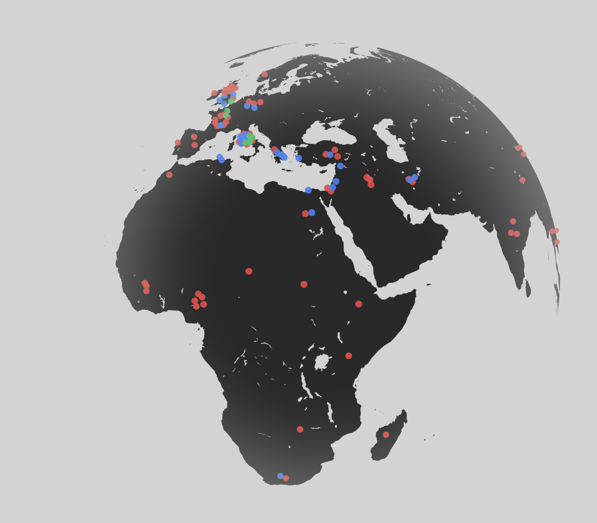

Overview
The Dream Atlas is an experimental mapping project that explores the spatial and temporal patterns of dreams documented across human history. Drawing from recorded dream narratives—from ancient, classical, medieval, and modern sources to contemporary dream reports—the project geospatially maps where and how different types of dreams occur, enabling new insights into the collective imagination and unconscious experience.
The project traces both the geographic dimensions of dreaming and the evolution of recurring dream archetypes such as falling, flying, fighting, and escaping. These themes are visualised across epochs and cultures to examine how dream content reflects shifting cultural, psychological, and environmental conditions over time.

Approach
The Dream Atlas sits at the intersection of design research, geospatial analysis, and narrative cartography. Dreams are treated not as isolated psychological artefacts, but as culturally embedded records shaped by place, time, and social context.
The project combines longitudinal mapping of dream records across centuries with thematic categorisation of archetypes. Interactive visualisation supports exploratory navigation across temporal layers, geographic regions, and narrative clusters, encouraging reflective engagement rather than fixed interpretation.
Process
- Compiled dream records from historical texts, psychological archives, and contemporary dream databases.
- Coded and classified dream narratives into recurring archetypes and thematic groupings.
- Mapped dream data geospatially and temporally using GIS and ArcGIS workflows.
- Designed interactive prototypes that integrate spatial data and narrative structure.
Technology
- GIS & ArcGIS for spatial analysis and historical layering
- Custom data pipelines for archetype classification and temporal mapping
- Interactive mapping interfaces for narrative exploration
Presentation
The Dream Atlas was presented at the Dream x Engineering (DxE) Symposium at the MIT Media Lab, where it featured in panel discussions exploring the intersection of dream research, design, and engineering. The presentation positioned the project as a design-led geospatial approach to understanding dream patterns across history and culture.
Gallery
The Dream Atlas — mapping project.
Mapping interface — The Dream Atlas.
Zoom explore — The Dream Atlas.
Timeline — The Dream Atlas.